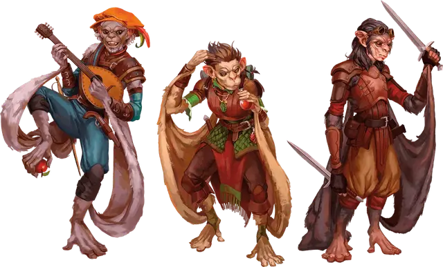

Хадози
Hadozee

Создание вашего персонажа
Когда вы создаёте своего персонажа в D&D, вы решаете, является ли он представителем человеческой расы или одной из фантастических рас, включая те, что представлены в этой главе. Если вы создаёте персонажа, используя опцию расы, представленную здесь, следуйте описанным ниже правилам.
Увеличение характеристик
При определении значений характеристик вашего персонажа увеличьте одну из характеристик на 2, а другую — на 1, или увеличьте три различные характеристики на 1. Следуйте этому правилу независимо от метода, который вы используете для определения характеристик, бросаете ли вы кости или настраиваете значения.
Раздел «Быстрое создание» в выбранном вами классе даёт рекомендации по тому, какие характеристики увеличить. Вы вольны следовать этим советам или игнорировать их. Какие бы значения вы ни решили увеличить, значение ни одной характеристики не может превышать 20.
Языки
Ваш персонаж может говорить, читать и писать на Общем и ещё на одном языке, который вы и Мастер сочтёте подходящим для персонажа. «Книга игрока» содержит список распространённых языков на выбор. Мастер может свободно добавлять или удалять языки из этого списка для нужд кампании.
Вид существа
У каждого существа в D&D, включая каждого персонажа игрока, в правилах есть специальный тег, определяющий вид существа. Большинство персонажей игроков является Гуманоидами. В представленных вариантах рас указано, к какому виду существ относится ваш персонаж.
Вот список видов существ в игре в алфавитном порядке: Аберрация, Великан, Гуманоид, Дракон, Зверь, Исчадие, Конструкт, Монстр, Небожитель, Нежить, Растение, Слизь, Фея, Элементаль. Для видов не существует конкретных правил, но некоторые элементы игры различны для существ разных видов. Например, в тексте заклинания лечение ран [cure wounds] указано, что оно не действует на конструктов. Автогном является исключением из-за его особенности «Лечащая машина».
Продолжительность жизни
Типичная продолжительность жизни персонажей игроков в мультивселенной D&D составляет около века, если персонаж не умрёт насильственной смертью в приключениях. Представители некоторых рас, таких как гномы и эльфы, могут жить столетиями — факт, отмеченный в описании этих рас.
Рост и вес
Персонажи игроков, вне зависимости от расы, обычно имеют примерно тот же рост и вес, как люди в реальном мире. Если вы хотите определить рост или вес персонажа случайным образом, обратитесь к таблице «Случайный рост и вес» в «Книге игрока», и выберите строку в таблице, наилучшим образом описывающую ваше представление о персонаже.
Первые хадози были робкими млекопитающими не крупнее домашних кошек. Преследуемые более крупными естественными хищниками, хадози забрались на деревья и развили крылья, которые позволили им скользить с ветки на ветку.
Сегодня хадози - это разумные двуногие существа, стремящиеся оставить позади страшных хищников своего родного мира и исследовать другие миры.
В дополнение к тому, что они прирожденные альпинисты, у хадози есть ноги, которые так же ловки, как и их руки, даже до такой степени, что у них есть противопоставленные большие пальцы. Мембраны кожи свободно свисают с их рук и ног. При тугом растяжении эти мембраны позволяют хадози скользить. Хадози оборачивают себя этими крыльями, чтобы согреться.
Особенности Хадози
Вы обладаете следующими особенностями.
Увеличение характеристик. Либо значение одной характеристики по вашему выбору увеличивается на 2, а другой — на 1, либо значение трёх различных характеристик по вашему выбору увеличивается на 1.
Вид существа. Вы — Гуманоид.
Размер. Ваш размер — Маленький или Средний. Вы определяете размер при выборе расы.
Скорость. Ваша базовая скорость ходьбы — 30 футов. Кроме того, вы имеете скорость лазания, равную скорости ходьбы.
Ловкие ступни. Вы можете бонусным действием использовать свои ноги, чтобы манипулировать предметами, открывать или закрывать двери или контейнеры, а также поднимать или класть Крошечные предметы.
Планирование. Когда вы падаете с высоты не менее 10 футов над землей, вы можете реакцией расправить свои кожаные мембраны, чтобы горизонтально спланировать на количество футов, равное вашей скорости ходьбы, и вы получаете 0 урона от падения. Вы определяете направление планирования.
Вёрткость хадози. Магия, которая течёт в ваших венах, усиливает вашу естественную защиту. Когда вы получаете урон, вы можете реакцией бросить к6. Добавьте свой бонус мастерства к выпавшему числу и уменьшите получаемый вами урон на величину, равную этой сумме (минимум 0 урона).
Вы можете использовать эту особенность количество раз, равное вашему бонусу мастерства. Вы восстанавливаете все потраченные использования, когда заканчиваете продолжительный отдых.